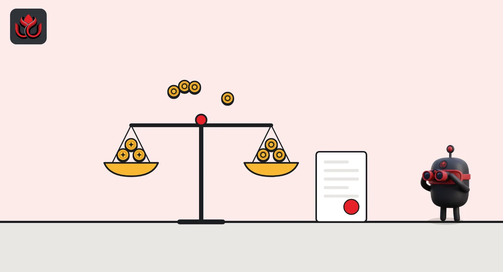

Nigeria sets a ₦15 billion floor for dollar stablecoin issuers and bans algorithmic coins
The Central Bank of Nigeria's new rules say foreign-currency stablecoins can reach Nigerians only through a locally licensed issuer. A foreign license does not count, and peer-to-peer desks need the bank's approval.
Key points
- Issuers of naira stablecoins need ₦10 billion in paid-up capital. Issuers of foreign-currency stablecoins need ₦15 billion, with no exemption for offshore firms.
- Algorithmic stablecoins and tokens backed mainly by other crypto are banned.
- Peer-to-peer platforms need a license plus express approval, and the bank account name must match the verified customer before a token is released.
What the central bank published
The Central Bank of Nigeria (CBN) has posted Regulations for the Operations of Non-Security Virtual Assets in Nigeria. The rules are issued under a 2026 presidential executive order on virtual assets coordination.
They cover stablecoin issuing, exchange, on-ramps and off-ramps, custody, wallets and payments. Tokens that count as securities stay with Nigeria's Securities and Exchange Commission. Central bank digital currencies are excluded. The document we read carries no issue date or start date.
Two classes of stablecoin
Class 1 stablecoins track the naira one to one and must be fully backed by naira reserve assets. Class 2 stablecoins track a foreign currency such as the dollar.
A Class 2 coin can reach people in Nigeria only if a Nigerian-incorporated company with a Class 2 license issues it. Section 6.5 says a foreign license does not replace the Nigerian one. Class 2 coins also cannot be used to settle naira obligations at home unless another law allows it.
On top of capital, a Class 2 issuer must keep operating liquidity of at least US$10 million, plus 15% of its Nigeria-linked liabilities and 30 days of stressed outflows.
Minimum paid-up capital by license
₦ billion
Source: CBN regulations. The bank may set higher amounts.

What is banned
Section 2.2 bans algorithmic stablecoins that hold their price mainly by adjusting supply rather than full backing. It also bans tokens backed mainly by other crypto assets and tokens without a legal right to redeem at par.
A stablecoin becomes "systemic" if its supply tops ₦500 billion every day for 30 days in a row, or if more than 5 million people in Nigeria hold or use it. Issuers of systemic stablecoins keep the Section 15 floor plus any higher capital the bank sets.
Where the capital must sit
Section 17 says the required capital must be held as cash in a designated account at the CBN, or as federal government securities under a CBN lien. It cannot be withdrawn or pledged without the bank's written approval.
A firm that falls below its minimum must tell the bank at once and file a plan to restore it within 10 business days. Issuers must also hold liquid assets, separate from customer reserves, to cover the larger of six months of expected costs or the cost of winding down. Other service providers that already hold an SEC license must hold the ₦1 billion CBN minimum on top of their SEC capital.
New rules for peer-to-peer trading
Peer-to-peer (P2P) platforms, where users trade crypto directly with each other for naira, get no license of their own. They need one of the CBN's service licenses plus express approval.
Before a token is released, the name and bank verification number (BVN) on the naira account must match the verified customer. The naira side must move through permitted Nigerian channels, and cross-border P2P needs separate approval. P2P approval does not allow foreign-exchange business.
LC Insight analysis
This section is our reading of the facts above, not a statement of fact.
- We think the Class 2 rule is the one to watch. Large dollar stablecoins used in Nigeria today would need a local licensed issuer, or their reach there could narrow.
- The BVN name match targets the third-party accounts often used on P2P desks. That could slow trading at first while platforms change their checks.
What's next
- A start date or transition period from the CBN
- Whether any large dollar stablecoin issuer applies for a Class 2 license
- How P2P platforms change their naira payment checks
Disclaimer. This article is based on public information and the sources listed below as of the update time shown. It is for information only and is not investment, legal or tax advice. Figures may change as companies and authorities publish new data.